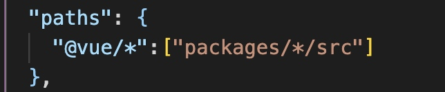

Vue3整体架构
Vue3架构介绍
Monorepo 管理项目
Monorepo是管理项目代码的一个方式，指在一个项目仓库（repo）中管理多个模块、包（package）。Vue3源码采用monorepo方式进行管理，将模块拆分到package目录中。
- 一个仓库可维护多个模块，不用导出找仓库
- 方便版本管理和依赖管理，模块之间的引用，调用都非常方便。
Vue3项目结构

Vue3采用TypeScript
Vue2采用Flow来进行类型检测（Vue2对ts支持并不友好），Vue3源码采用TypeScript来进行重写，对ts支持更友好。
Vue3开发环境搭建
搭建Monorepo环境
Vue3中使用pnpm workspace 来实现monorepo（pnpm是快速、节省磁盘空间的包管理器。主要采用符号链接的方式管理模块）
全局安装pnpm
npm install pnpm -g #全局安装pnpm
pnpm init -y # 初始化配置文件，今天尝试了一下已经不需要参数了
创建.npmrc 文件
shamefully-hoist = true
这里可以尝试安装Vue3，pnpm install vue@next此时默认情况下Vue3中依赖的模块不会被提升到node_modules下，添加羞耻的提升可以讲Vue3所依赖的模块提升到node_modules中。
创建工作空间
创建pnpm-workspack.yaml，并指定工作空间目录
packages:
- 'packages/*'
表示所有包都在packages目录下
TS 配置文件
使用pnpm tsc --init创建tsconfig.json
{
"compilerOptions": {
/* Visit https://aka.ms/tsconfig to read more about this file */
/* Language and Environment */
"target": "es2016", // 目标语法
"lib": ["ESNext","DOM"], // 支持的类库 esnext及dom
"jsx": "preserve", //jsx不转义
/* Modules */
"module": "ESNext", // 模块格式
"moduleResolution": "node", // 模块解析方式
"baseUrl": ".",
"paths": {
"@vue/*":["packages/*/src"]
},
"resolveJsonModule": true, // 解析JSON模块
/* Emit */
"sourceMap": true, // 采用sourceMap
"outDir": "dist", //输出的目录
/* Interop Constraints */
"esModuleInterop": true, // 允许通过es6语法引入commonjs模块
/* Type Checking */
"strict": false, // 严格模块
}
}
ts配置文件是为了，模块引入的时候可以直接找到对应的位置
import {isObject} from "@vue/shared"
路径在配置时已经确定，如果配置改了，引入的时候也要相应的修改

Vue3响应式原理
Vue3响应式
Vue3对比Vue2的变化
- 在Vue2的使用使用defineProperty来进行数据的劫持，需要对属性进行重写添加
getter和setter性能差 - 当新增属性和删除属性时无法监控变化.需要通过
$set、$delete实现 - 数组不采用defineProperty来进行劫持（浪费性能，对所有索引进行劫持会造成性能浪费）需要对数组单独进行处理。
Vue3中使用Proxy来实现响应式数据变化，从而解决上述问题。
CompositionApi
- 在Vue2中采用的是OptionsAPI，用户提供的data,props,methods,computed,watch等属性（用户编写复杂业务逻辑会出现反复横跳问题）
- Vue2中所有的属性都是通过
this访问，this存在指向明确问题 - Vue2中很多未使用方法或属性依旧会被打包，并且所有全局API都在Vue对象上公开。CompositionAPI对tree-shaking更加友好，代码也更容易压缩。
- 组件逻辑共享问题，Vue2采用mixins实现组件质检的逻辑共享；但是会有书记来源不明确，命名冲突等问题。Vue3采用CompositionAPI提取公共逻辑非常方便
简单的组件仍然可以采用OptionsAPI进行编写，compositionAPI在复杂的逻辑中有着明显的优势。
reactivity模块中就包含了很多我们经常使用的API，例如：computed、reactive、ref、effect等。
reactivity
reactive 将数据变成响应式， Proxy
const {effect,reactive,shallowReactive} = VueReactivity;
const state = reactive({name:'xm',age:18,address:{num:209}});
consloe.log(state)
// 此effect函数默认会先执行一次，对响应式数据取值（取值的过程中数据会依赖于当前的effect）
effect(()=>{
document.getElementById('app').innerHTML = state.name + '今年' + state.age + '岁了'
})
// 稍后name 和age变化会重新执行effect函数
setTimeout(()=>{state.age = 14;},1000)
reactive 会把state中子对象也设置为代理对象
shallowReactive 只代理一层
为什么不能简单的Proxy实现
const proxy = new Proxy(target, {
get(target, key, receiver) {
return target[key];
},
set(target, key, value, receiver) {
target[key] = value;
return true;
}
})
加入目标target如下
let target = {
name:"zs",
get alias() {
return this.name
}
}
这个时候如果取proxy.alias 去alias上取了值时，也去了name，但是没有监控到name.
这个时候需要使用Reflect（反射），防止this指向出问题
代码如下
// 并没有重新定义属性,只是代理,在取值的时候调用get,当赋值的时候调用set
const proxy = new Proxy(target, {
/**
* @param target 元对象
* @param key 键
* @param receiver 代理对象 --> proxy
* @returns
*/
get(target, key, receiver) {
return Reflect.get(target,key,receiver)
},
set(target, key, value, receiver) {
return Reflect.set(target,key,value,receiver);
}
})
}